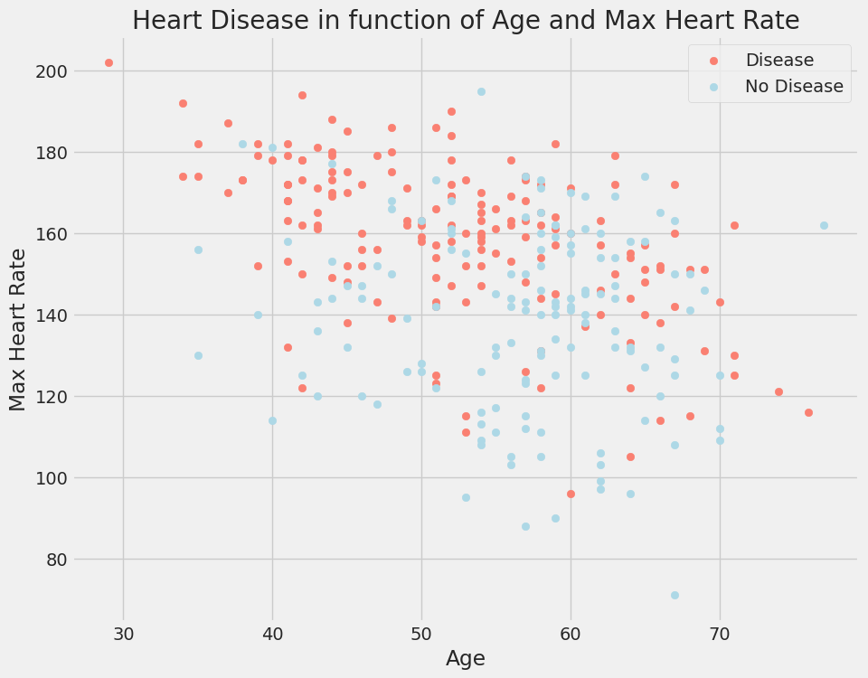

การวินิจฉัยโรคหัวใจเป็นความท้าทายที่ใหญ่ที่สุดในอุตสาหกรรมการแพทย์และอาศัยปัจจัยต่างๆ เช่น การตรวจร่างกาย และการแสดงอาการของผู้ป่วยซึ่ง
ปัจจัยที่มีอิทธิพลต่อโรคหัวใจ ได้แก่ ระดับคอเลสเตอรอลในร่างกาย พฤติกรรมการสูบบุหรี่และโรคอ้วน ประวัติการเจ็บป่วยในครอบครัว ความดันโลหิต และสภาพแวดล้อมในการทำงาน
โดยการใช้อัลกอริทึมโดยใช้ภาษา Python เพื่อเรียนรู้ในการทำนายโรคหัวใจซึ่งปัจจุบันความก้าวหน้าทางเทคโนโลยีทำให้สามารถรวมเข้ากับ Big Data เพื่อจัดการข้อมูลที่ไม่มีโครงสร้างและเพิ่มขึ้นอย่างทวีคูณ
โรคหัวใจถูกมองว่าเป็นโรคที่คร่าชีวิตมนุษย์มากที่สุดในโลก โดยเฉพาะอย่างยิ่งในโรคประเภทนี้ หัวใจไม่สามารถส่งเลือดในปริมาณที่ต้องการไปยังอวัยวะที่เหลือของร่างกายมนุษย์เพื่อทำหน้าที่ปกติได้
Import library ที่จำเป็นเข้ามาใช้ในการ Analysis Data ต่างๆ
และทำการ Import DataSet ที่ชื่อว่า Heart.csv เข้ามาเพื่อใช้ในการ Analysis
โหลด Data Base (Heart.csv) ---- > Here
จากการฟแท่งอันนี้เราจะเห็นว่า Database ที่เอามานั้นมีผู้ป่วยที่เป็นโรคหัวใจ (1) 165 คน และผู้ป่วยที่ไม่เป็นโรคหัวใจ (0) 138 คน
การตรวจเช็คค่าที่ผิดพลาดต่างๆใน Datasetและจะพบว่า Dataset ที่เอามาเป็น Dataset ที่ดีมากไม่มีค่า Error หรือ ค่า Null เลย
จากกราฟด้านล่าง เราจะสังเกตุเห็น Figure ได้ 6 Figure โดยแต่ละอันมีความหมายดังนี้
1.cp(Chest pain) = อาการเจ็บหน้าอกโดยจากที่สังเกตุคือผู้ที่มี CP 1,2,3 จะมีโอกาศที่จะเป็นโรคหัวใจมากกว่าผู้ที่มี CP 0
2.restecg = ค่าของสัญญาณ EKG คนที่มีค่า 1 จะมีแนวโน้มที่จะเป็นโรคหัวใจและเกี่ยวกับการเต้นของหัวใจที่ผิดจังหวะ
3.exang(exercise-include angina) = โดยคนที่มีค่า 0. คือคนที่เป็น anginaที่เกิดจากการออกกำลังกายส่วน คนที่มีค่าเป็น 1 คือคนที่เป็น angina โดยที่ไม่ออกกำลังกาย **angina คือ อาการเจ็บหน้าอก
4. Slope = ค่าความชันของค่า ST ซึ่งเกิดขึ้นเมื่อร่างกายออกกำลังกายมากที่สุด โดยคนที่มีค่าความชันเท่ากับ 2 = สัญญาณของหัวใจไม่แข็งแรง และคนที่มีค่าความชันเท่ากับ 1 เป็นคนที่หัวใจแข็งแรงปกติ (ค่าความชัน:อัตราการเต้นของหัวใจที่ดีที่สุด)
5. ca = จำนวนของหลอดเลือดใหญ่ที่ทำการย้อมสีด้วย fluoroscopy ซึี่งถ้าเลือดเคลื่อนตัวได้ดีผู้ที่มีค่า ca = 0 เป็นคนที่มีความเสี่ยงที่จะเป็นโรคหัวใจ
6. thal = คนที่เคยมีแนวโน้มที่เคยเป็นโรคหัวใจและรักษาหัวใจให้หายดีแล้ว thal = 2 เป็นคนที่หายแล้วแต่ยังคงมีแนวโน้มในการเป็นโรคหัวใจอยู่
จากกราฟด้านล่าง เราจะสังเกตุเห็น Figure ได้ 6 Figure โดยแต่ละอันมีความหมายดังนี้
1.trestbps: ความดันโลหิตสูงกว่า 130-140 โดยทั่วไปเป็นเรื่องที่น่ากังวล
2.chol: ค่าcholมากกว่า 200 เป็นเรื่องที่น่าเป็นห่วง
3.thalach: ผู้ที่มีจำนวนสูงสุดมากกว่า 140 คนมีแนวโน้มที่จะเป็นโรคหัวใจ
4.oldpeak: ST ที่เกิดจากการออกกำลังกายเทียบกับการพักผ่อนดูที่ความเครียดของหัวใจในระหว่างการออกกำลังกาย หัวใจที่ไม่แข็งแรงจะมีความเสี่ยงที่จะเป็นโรคหัวใจมากขึ้น
กราฟในรูปแบบจุดซึ่งเป็นการหาอัตราการเป็นโรคหัวใจเมื่อเปรียบเทียบระหว่าง อายุ และ อัตราการเต้นของหัวใจ
1. fbs และ chol เป็นตัวแปรที่มีความสัมพันธ์ในการเกิดโรคหัวใจน้อยที่สุด
2. ตัวแปรอื่นๆมีความสัมพันธุ์อย่างมีนัยยะสำคัญกับผู้ป่วย
หลังจากสำรวจชุดข้อมูลแล้ว เราสังเกตได้ว่าเราต้องแปลงตัวแปรตามหมวดหมู่เป็นตัวแปรจำลองและปรับขนาดค่าทั้งหมดก่อนที่จะฝึกโมเดลแมชชีนเลิร์นนิ่ง
สำหรับงานนี้ โดยใช้เมธอด get_dummies เพื่อสร้างคอลัมน์จำลองสำหรับตัวแปรตามหมวดหมู่
การฝึกโมเดลแมชชีนเลิร์นนิงสำหรับการทำนายโรคหัวใจ โดยใช้อัลกอริทึมโลจิสติกตามที่กล่าวไว้ในตอนต้นของบทความ แต่ก่อนฝึกโมเดลโดยกำหนดฟังก์ชัน
ตัวช่วยสำหรับการพิมพ์รายงานการจำแนกประสิทธิภาพของโมเดลแมชชีนเลิร์นนิงก่อน
แบ่งข้อมูลออกเป็นการฝึกอบรม 70% และการทดสอบ 30%
จากที่เห็นแล้วว่าอัลกอลิทึ่มทำงานได้ดีมากในชุดทดสอบและมีความแม่นยำถึง 86.79% ทั้งการ Training และ Testing ซึ่งนั้นเห็นได้ว่า อัลกอลิทึ่มที่ผู้จัดทำมา
นั้นมีประสิทธิภาพในการจำแนกระหว่างผู้ป่วยที่เป็นโรคหัวใจและไม่ได้เป็นโรคหัวใจ